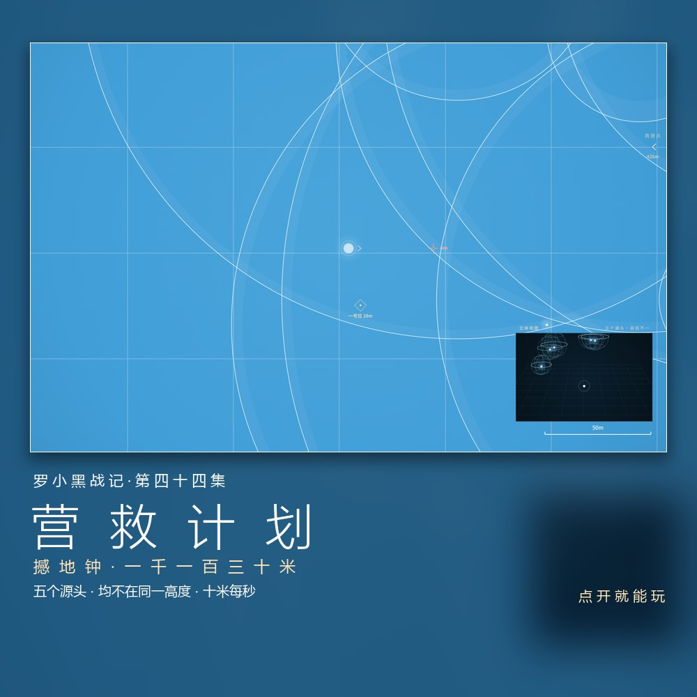

距 救 援 点
1130
m
壹 · 潜 入
兜 底
传 送
0
次
下 一 道 波
—
s
横 过 来 · 视 野 更 宽
罗 小 黑 战 记 · 第 四 十 四 集
营救计划
撼 地 钟 · 一 千 一 百 三 十 米
天星灯锁死了空间，唯一的走法是
无限吞噬
——
先啃掉一小块地方，小黑再把两个人塞进去。空腔只撑得住
1 秒
。
波到之前没离开，就会被听见。
鼠标定方位与距离
点击
传送
Esc
暂停
T
立体视图
M
静音
按住屏幕拖方向，松手传送。二十五到五十米。
音 量
开 始 潜 入
暂 停
停 在 缝 里
洞口正在自己合上。别停太久。
继 续
被 感 应
阵 亮 了
那一瞬，皁熹阵的四层环同时收拢。
四千名士兵，同时抬起了头。
0
传 送
0
点 位 命 中
0
米
再 来 一 次
救 援 成 功 · 回 到 出 发 点
冬 冬
最后一道波从头顶掠过的时候，无限把冬冬往怀里又按了按。
“师父，我做到了。”
0
传 送
0
点 位 命 中
0
秒
3
兜 底 剩 余
S
评 价
再 走 一 趟
点 一 下 播 放
罗 小 黑 战 记 · 第 四 十 四 集
跳 过